20 歲的單車環島日記（上）
# I
路線: 台大—台九26公里—千島湖—坪林—九彎十八拐—礁溪
住宿: 礁溪國小搭帳棚
最難忘: 路上巧遇阿伯推薦千島湖、坪林北勢溪游泳、大雨中騎下九彎十八拐、礁溪國小帳篷初體驗、廁所克難洗澡
–
前一晚和 partner 整理行李到清晨四點，仔細對照確認過該帶的物品及確認路線，還有好友端之和江翊相伴，很期待很興奮！！期盼了整整一年，準備了一個多月，為了就是這趟旅程啊！
第一天就面臨了這趟旅程的一大魔王 – 北宜公路，之前就聽說這條路不好騎，但因為貪戀欣賞山中美景，還是硬著頭皮捨棄濱海公路。北宜公路分兩段，第一段到台九線 26 公里的地方是高處，再來就一路下坡，也許是因為很謹慎小心吧！第一段騎完時覺得體力還很 OK！邊騎還邊跟路上練車的阿伯聊天，他推薦我們經過千島湖時可以下去看看，愛玩的我當然欣然接受推薦囉！
千島湖是翡翠水庫興建後而生的景點，碧綠的潭水淹過原本的小山丘而成，名為千島湖，其實只有三個大島。千島湖是…下坡陡到不能騎、上坡也陡到讓你騎不上去！！！天啊…我騎完千島湖之後（大部分都在牽車）深深有感 — 「建北宜公路的人超強；騎過北宜公路的人超猛；騎完千島湖的人是神！」
過千島湖後一路下滑到坪林，拜訪不久前來過的北勢溪，真的也是膽子夠大！我們就這樣連車褲帶衣的下水游泳了！有點瘋狂，但是好舒服啊！每次出門玩都抵擋不住玩水的誘惑。萬萬沒想到，真正的大魔王在後頭，從坪林一路到 56 公里處 – 完全崩潰…也許是因為千島湖和游泳體力消耗了一些，北宜公路的第二段上坡讓我騎到好想哭…….（這是這趟旅程中唯二讓我騎到想哭的時候）
最後還是順利到了礁溪，在大雨中找到礁溪國小!! 很幸運地恰好礁溪國小是個開放的場域（原先還很緊張會進不去校園），我們選了個通風處搭起了帳篷，因為有下雨，所以晚上也很涼很舒服！初體驗總是十分緊張，洗澡搭帳棚洗衣服都要在克難的環境下達成，真的很棒很好玩!關於搭帳篷的故事，未來幾天的遊記還可以再細細分享。
今天的北宜，騎得很累!但是好愉悅! 晚安礁溪。
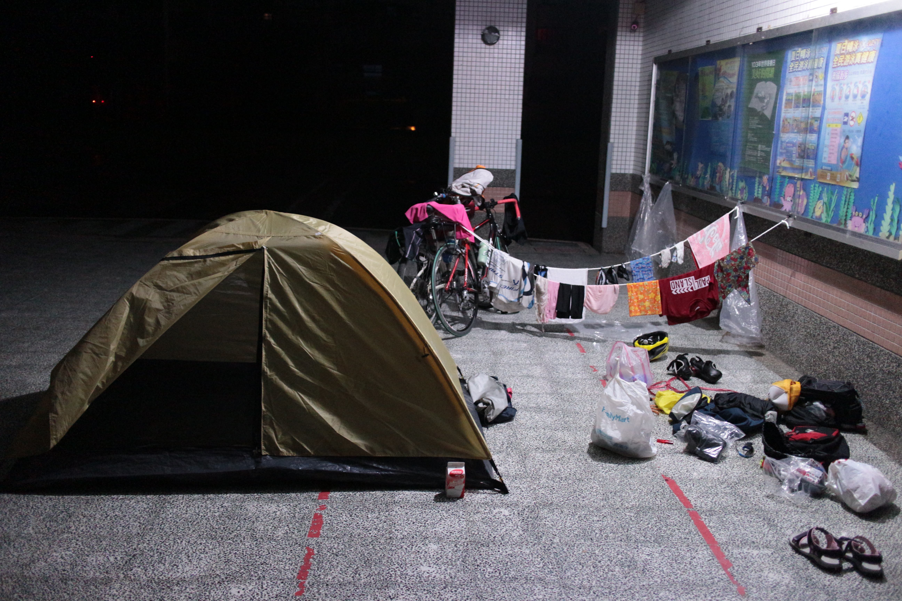
# II
路線: 礁溪國小—五峰旗瀑布—梅花湖—羅東夜市—三清宮
住宿: 梅花湖旁三清宮(通鋪一人150，雙人房一人300)
最難忘: 五峰旗瀑布給野生的小魚吃腳、梅花湖游泳、羅東夜市吃飽飽、梅花湖夜遊
–
國小一早有許多人前來運動，在七點多時就準備出帳收東西，這時候遇到一個阿姨前來找我們聊天:
「喔！你們是在環島喔！還自己搭帳棚這麼厲害！！對了！那你們等一下可以去五峰旗瀑布看看啊！」
「那往那邊的路是山路嗎？（前一天騎山路騎到怕了）」
「不是山路，很好騎的！離這裡也很近！」
就這樣，我們隨即決定了今天早上要拜訪的景點！（說來真有趣！我們的行程就是這麼的有彈性，昨天的千島湖也是，今天的五峰旗也是，當地人總是能帶我們找到最好玩的地方！（旅行的重點不是去了哪裡，而是和誰一起，還有，用心享受每一個意外）
五峰旗瀑布真的是個很棒的地方！我們停在一個大潭旁，冰冰涼涼的溪水還有無敵多的小魚，一看到有水就忍不住換上泳衣下水玩了，漂在水上被小魚啄，冰冰涼涼的洗淨一身的疲累，太舒服了！五峰旗的溪水是涼到會發抖的那種，很好玩！！
下午直闖梅花湖，梅花湖是在羅東的郊山上，由北往南過蘭陽大橋後轉縣道上山約 10 公里就能到達，其實今天的主要目的就是要來游梅花湖的！莫名的興奮！因為梅花湖明訂不能游泳，我們還找了一個比較隱密的地方下水（真是野孩子），終於美夢成真啦！ 最後還是不小心被開遊艇的大哥發現了..「小姐小姐，這裡不能游泳，請你們馬上上岸喔！ 」XD
白天的梅花湖很有趣！夜晚的梅花湖很美！從三清宮一眼望去即是閃爍著月光的梅花湖及羅東市區，那裏的夜景真是美！我們在打理好雜事後，就前往夜遊梅花湖的行程，非常刺激呢！這時候就完全能體會到兩個人結伴旅行的重要了！若是我自己一個人絕對不會敢的。一路上都有路燈照明所以很安全，晚上的梅花湖畔，好靜好美，很舒服的夜晚。
晚安。可愛的梅花湖。
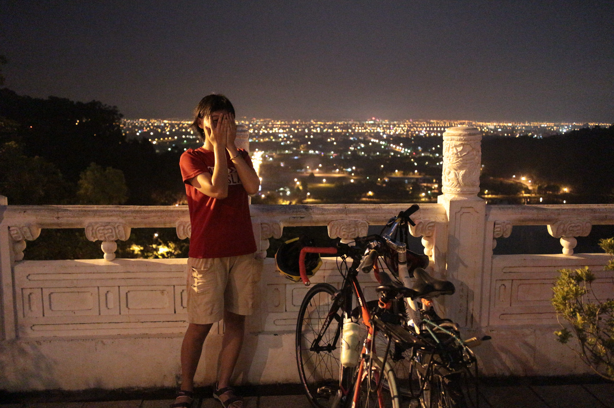
# III
路線: 梅花湖—冬山河親水公園—蘇澳新火車站—蘇澳冷泉—新城火車站—花蓮市區
住宿: 花蓮青年旅舍—阿美客(一人450)
最難忘: 冬山河吃西瓜、蘇澳冷泉游泳、新城站搭訕環島同學、自強夜市吃飽飽、夜遊北濱海岸
–
今天預計我和 partner 要分頭進行，我搭火車過蘇花，他騎車，但請朋友評估了一下蘇花的路況，因為下過雨的蘇花可能會有危險，於是就決定兩個人一起搭火車！也因為這樣多了一些時間可以到花蓮到處晃晃。
出發時看到路標「往冬山河」，心想，該不會又可以玩水了吧！於是就直直衝到冬山河去了，到了才發現…要 門 票…QQ 真是傻了怎麼都沒想到，但是一旁聚集的攤販小吃也夠我們享受的了！一大杯冰冰涼涼西瓜汁咕嚕下肚！好不痛快！
一路騎到蘇澳新火車站，路上巧遇一位也是單車環島的同學，我樂不可支！路上能遇到一樣是單車環島的同伴一定要好好聊聊！他今天也是要到花蓮，我就推薦給他我曾經住過的地方，聊了大約二十分鐘吧！後來我的 partner 私底下跟我說…「妳不覺得他那時候完全不想跟妳聊天嗎？他一定覺得這個人怎麼這麼煩XD」哈哈他這麼一講我才覺得好像真的是這樣！不過這倒是讓我發現了我愛認識人、愛聊天的本性！我覺得愛聊天真的是一件很棒的事！不只很棒，在旅途中還會因此有更多更多驚喜的際遇！人與人之間就是從聊天開始認識的，希望我能好好保有這樣一項自己喜歡的特質呢！
今晚住宿的地方很特別，是我去年搭便車環島住的地方，因為去年受到老闆很多照顧，對這個小地方很有感情，所以事隔一年，又帶著找老朋友的心情前來。很有舊地重遊的感覺！好懷念啊！其實一路上我都在找尋著去年我自己留下的足跡，找老朋友、找曾經走過的美麗故事。
晚上的北濱海岸，很舒服，不過那裏是碰不到海的，而且比較沒有燈照明比較危險一些。但光是能在步道上坐著聊天聽海的聲音，也夠幸福的了！
晚安。花蓮。
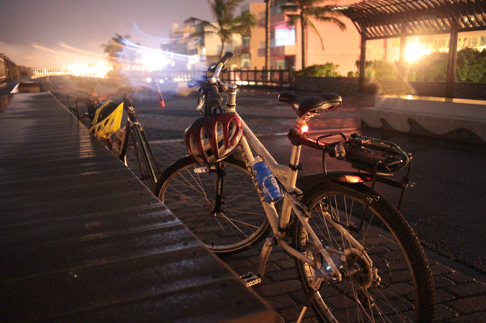
# IV
路線: 花蓮市區—七星潭—193縣道—台11縣—豐濱—台東樟原
住宿: 樟原派出所搭帳棚
最難忘: 七星潭游泳、台 11 線大雨上坡、夜晚的海岸公路、溫暖的樟原警察伯伯
–
七星潭好美！儘管已經是第二次與他見面了，還是情不自禁地被它的美麗收服，這次，我還做了大突破呢！ 下 海 游 泳！！因為身邊有位救生員 說，現在剛好是漲潮，浪都是往岸上打，也剛好今天風浪比較小，下去游不會危險 XD 就在他的帶領下，經歷了人生第一次游海！躺在海上超舒服的！因為密度的關係，踩水也輕鬆許多！就這樣隨著海浪起起伏伏，很像在搖籃裡，超級棒的體驗！！
之後因為不小心貪玩玩太久了，我們一路沿台 11 縣到樟原的行程延遲，步上第一天騎夜路的困境，海岸公路是一條標準「山海相隨」的道路，沿路上沒甚麼城鎮，沿路都是山路上上下下的，之前提過我這趟旅程中有兩段路騎到想哭，第一段是北宜，第二段就是這了！！（沒想到我竟然會被在豐濱之前的無名小山打敗…）因為一路上坡，加上下雨又有小逆風，還有當時天色已經漸漸暗了…騎到好崩潰…
過豐濱之後狀況就好很多了！一路下坡滑到樟原，那時已經八點多，我們還在距離目的約一小時行程的地方，真的是很緊張！而且沿路幾乎沒有路燈，只能靠車前車尾燈照明，十分刺激！！
晚上到了樟原派出所紮營，可愛的警察伯伯熱情的招待我們，深怕我們睡得不舒服，樟原派出所真的是個很美的地方！！我們打理好雜事後就在海邊的涼亭吃宵夜聽海聲！好舒服~！每天晚上的這時候，都是最輕鬆愜意的時候！結束一天疲累的行程，就會有幸福的優閒時光。
稍微介紹一下我們每天晚上的既定行程: 搭帳篷—找地方洗澡—洗衣服—架童軍繩—曬衣服—夜遊。我最喜歡夜遊的時刻了！晚上約11點多，有另一家人也來到樟原紮營，他們可是明天故事的要角喔!
晚安樟原。
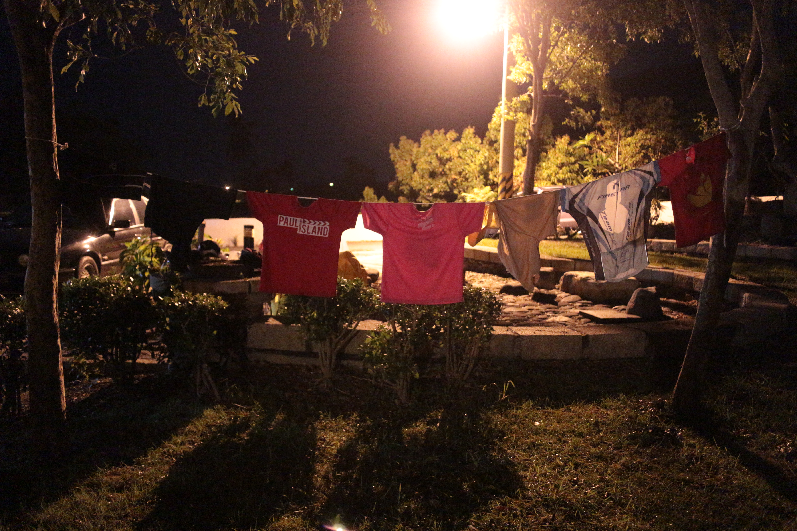
# V
路線: 樟原—長濱—玉長公路—玉里
住宿: 玉里國小南昌分校搭帳篷
最難忘: 樟原的日出、和營友吃早餐聊天一起騎車、長征玉長公路、玉里國小看星星、野生戰鬥澡
–
到了台灣東部，怎能錯過美麗的日出呢？今天一早五點多就出帳，帶著幾分睡意來到海邊（樟原派出所離海很近，走一下就到了ㄏ）等待日出…哇！真的是太美了！看著黃色的光暈慢慢的從海中浮現，把天上的雲都成金色的，和海水的反射互相照應著…真的是太美了！！
回到派出所後肚子開始餓了，才發現最近的商店距離這裡有 10 公里…不…這時和我們同一天晚上入住的營友熱情邀約—「如果不介意的話，我們可以一起吃早餐啊！」就這樣一句話，我們交到了四位新朋友，是營友，也是小小的車友，我們的早餐相談甚歡，要離開前，阿姨還送給我們好多食物當作路上的糧食，最後竟起意讓兩位弟弟陪我們騎到長濱！真是太有趣了，兩位弟弟體力真好！潛能無限啊！
騎到長濱，弟弟對我們說:「如果你們遇到甚麼問題就打給我們喔！要打電話喔！」天啊!太感人了！告別弟弟後，馬上迎接我們的就是「玉長公路」當初因為我的貪心，想看山又想看海，所以就要騎過海岸山脈，也是我這次環島預計的三大魔王之一！（三大魔王分別為—北宜、玉長、壽卡），玉長就像縮小版的北宜，短距離內就要爬升相當的高度，也是連接山與海的一條公路。不過似乎是因為體力變好了，雖然會累，但能夠全程騎完不下車，嗯！信心倍增呢！（但還是會怕山路阿~若是一天要爬兩座我可能就沒辦法了…）
晚上到玉里國小借宿，國小的主任帶我們到校園各地找適合搭帳篷的地方，我們問了哪裡有廁所方便洗澡，主任竟然指著走廊的洗手台說…「這裡有水龍頭和水管，晚上這裡都沒人啦!你們就一個人把風，另一個人沖一沖澡就好啦!」天啊…這對我來說可是大突破…不…最後還是硬著頭皮完成野生洗澡的壯舉 XD （就是穿著衣服沖澡），很克難，但真的蠻有趣的！
今天的夜遊時間到了玉里小鎮，玉里是個很美的地方！小小的城鎮卻甚麼都有，大約 10 點多時商店幾乎都關了，有種日出而作、日落而息的氣氛。很喜歡！
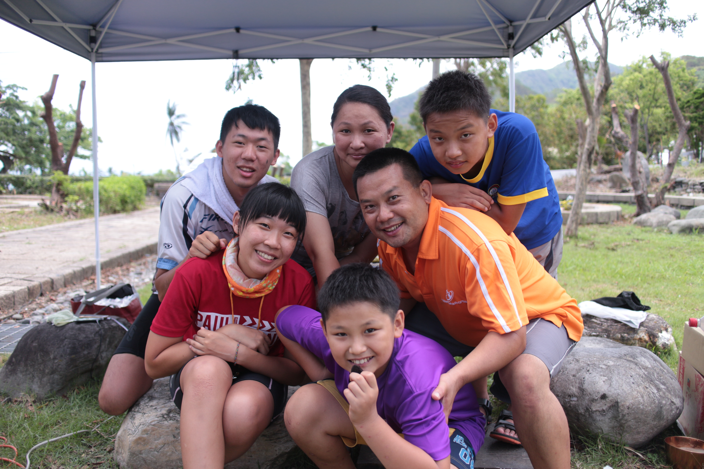
# VI
路線: 玉里—六十石山—池上(大坡池、伯朗大道)—鹿野
住宿: 鹿野山上草地搭帳棚
最難忘: 搭警察叔叔的車上山看金針花、搭便車下山、鹿野山上夜遊、夜宿不知名草地
–
在東部，有三個地方以金針花海著名—玉里赤柯山、富里六十石山、太麻里金針山，從以前就一直很想要上山看金針花，難得來到東部，這次也不例外，台九線騎到 308.6 公里處，即是六十石山的入口，我們向附近的竹田派出所問路況，想試試看能否騎車上山，沒想到警察叔叔斷然回復:「你們要騎車！？勸你們不要吧！那個坡度很陡耶！！你們騎不上去的…」警察伯伯的這樣說了…正當我們要打消念頭離開派出所之際…「你們兩個等一下喔！！我們這裡剛好有兩位員警要上山巡邏，你們要不要搭便車上去？你們遇到貴人了啦！」 天啊！！天啊！！怎麼會這麼幸運！真的是太棒的際遇了！我第一次搭警車竟然是被載上山看金針花！
上山的路真的不是能騎的路！（幸好沒有血氣方剛的衝上來），六十石山最頂的地方名為「小瑞士」，從那裏可以遠眺滿坑滿谷的金針花，可惜我們去的時候，因為前陣子的大雨，把很多金針花都打掉了，但是絲毫不影響我們上山玩樂的興致，真的超美的！一想到單車環島可以環上山，就覺得很不可思議！！
下午直奔鹿野，其實是有個小目的，我們要到鹿野山上的涼亭搭帳棚，這是我 partner 這次環島的小小夢想，聽說那個涼亭晚上會有穿山甲跟野兔，還能夠看星星！他以前就很想去，一直沒機會，想要在這次環島中完成夢想。
真的夠刺激！！我們租了一台機車，立馬輕裝上陣（山）！晚上的山路好恐怖啊，一開始只是覺得怎麼都沒路燈…到後來越上山越冷，騎了快 20 公里都沒看到一棟建築物、而且還莫名其妙的騎到下山的路，整座山都超級安靜，好像只有我們兩個人一樣…夜越來越深，連涼亭的影子都沒看到…心裡覺得毛毛的，就決定回返，在路旁找適合住宿的草地。
最後找到了一片平整的草地，還用四條線圍成了一個長方形場地，很適合紮營…但是…這片地到底是做甚麼的我們兩個都一頭霧水…心裡毛毛的，但因為太累了所以也沒得想這麼多，就這樣人生中第一次在野生的山上紮營，夠刺激的！！
（想知道這片地是做甚麼用的嗎？請看下回分曉！！
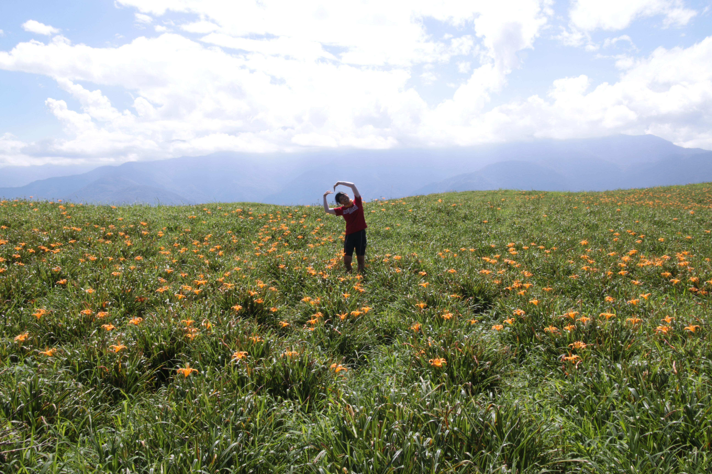
# VII
路線: 鹿野山上—蝴蝶谷—初鹿—太麻里
住宿: 太麻里旅店(兩人800)
最難忘: 晨間槌球場、蝴蝶谷戲水、台東鹿野遇鍾豪
–
還記得我們昨晚睡在空無一人的深山草地上嗎?
清晨五點多，天微亮，聽見摩托車駛近的聲音，「摳摳摳摳摳….」，接著是有人走在草地上的聲音…天啊！這麼早到底是誰會來這樣的深山中?心底有些毛毛的，想說再等一會說不定就會離開了，沒想到過了十分鐘，又有 3、4 輛摩托車的聲音，心裡越想越不對勁，決定出帳來一探究竟，沒出來看還好，出來一看竟然看到……….大約有10多位原住民拿著槌球桿正準備練球！！阿~！！恍然大悟！原來這個長方形的場地是槌球場啊！真的是太可愛了，裡面有大哥熱情的招呼我們:「阿你們可以在睡久一點啊！我們打球不會打擾到你們」(OS:怎麼好意思人家在練球我們在旁邊睡阿…XD)
趕緊出帳，一邊欣賞著原住民們練球的可愛場景，一邊開始收拾東西，我們也真傻，完全沒有想到山上會有露水，昨天曬的衣服全都溼透了…
「你們是每天都會來這裡打球喔?」
「沒有啦！！是因為最近要比賽了才會來練習！（可愛的原住民腔調）」
「大哥，那請問這附近有廁所嗎?」
「廁所喔…恩…（認真思索）…就大自然啊！！」
哈哈！！我聽到這句時快笑翻！對他們來說，這是多麼自然且平常的事情。真可愛！
道別了可愛的原住民槌球隊後，我們先騎車到國小曬衣服，鮮豔的車衣車褲整齊的曬在鹿野國小色彩繽紛的遊戲欄杆上，真美！真有趣！我好喜歡這種很簡單卻很可愛的生活！
接下來又是舊地重遊的時刻，我們騎著機車到了當地人才曉得的蝴蝶谷，去年來到鹿野，是一位旅舍認識的姐姐帶我來的。蝴蝶谷是一個被保育的很好的地方，因為不是觀光景點，所以水質清澈、生態豐富，在小瀑布的地方還有天然 SPA！一見到就愛上！（當然依我們的個性，兩個人都毫不猶豫地跳下水囉！！那裏有許多小魚小蝦，運氣好的時候小魚還會成群來吃你的腳 XD
下午與鍾豪約在初鹿見面，他也正在環島，是徒步環島（夠強吧！！），我在出發前就跟他約好我們一定要在環島的路上碰面，真的實現了！！
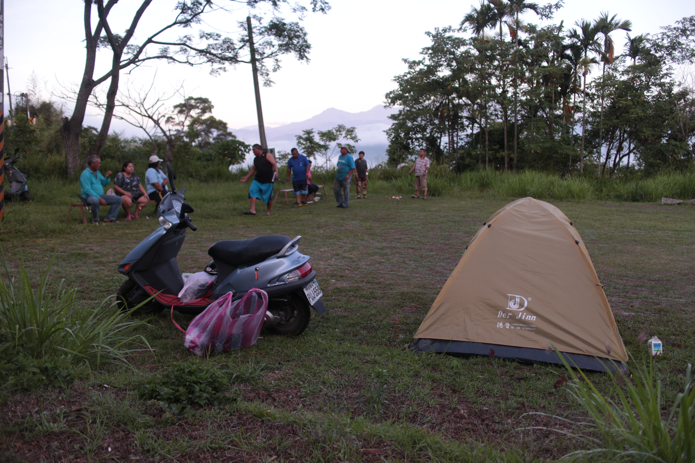
# VIII
路線: 太麻里—大武—達仁
住宿: 達仁鄉公所搭帳篷
最難忘: 太麻里看海、美麗的多良車站、達仁的工廠大哥們(借浴室)
–
原本預計今天要到墾丁的，但因為延誤了出發時間，決定明天在上壽卡，是個突然的決定。但也因為這樣，可以一圓夢想好好欣賞美麗的太麻里海邊！！！第一次見太麻里，也是去年暑假，那時就被它的美麗所震懾，海阿，對我有無可抵抗的吸引力。
今天同樣也是美麗的沿海道路，到了南台東之後，台 9 線和台 11 線會合，都會走向沿海的路段，所以今天一路上，也是和海一起度過的！也許是因為行程突然縮減，太過放鬆了，我們騎到達仁時已經幾乎天黑（達仁是離壽卡最近的城鎮，所以明天一出發就可以直攻壽卡），這時趕緊找當地的警察伯伯求救，問這理由沒有適合搭帳篷的地方，警察伯伯超級熱心的推薦我們到附近的一個鄉公所，那裏有一大片有屋頂的籃球場，旁邊還有公共廁所可以用水！真的是太好了！每到一個地方能找到落角之處，總是令人特別安心！
到鄉公所後，真的是個適合紮營的地方！只是…公共廁所鎖起來了…我們只好到處搜尋可以洗澡洗衣服的地方，這時候，騎過一群正在聊天大哥…
「不好意思，請問這附近有公共廁所嗎?」
「對面有一個加油站，那裏就有了啊！」
「真的嗎？謝謝！！」
「阿你們是要盥洗喔？」（大哥超強！不知道從哪一點看出來我們是想要洗澡的！
「恩對呀！」
「阿我們的浴室借你們就好啦！工廠後面那邊可以給你們用！」
「啊！真的嗎！不好意思…謝謝耶！！」
天啊！！大哥真的是人太好了！環島這幾天下來都沒好好洗過熱水澡，竟然就在沒有國小住的這天遇到好心人幫忙！真的是太感激了！！洗完澡之後恰逢超大陣雨，大哥還開一間休息室給我們躲雨；知道我們今晚要搭帳棚後，還熱情地邀我們可以在他們工廠裡住一晚上，我們因為有其他計劃所以婉拒了熱情的邀約。
旅途中最讓人感動且印象深刻的，都是這樣從未預期到的際遇。 明日…直攻壽卡，要打掉這次環島的最後一個大魔王了！
晚安。可愛的達仁小鎮。
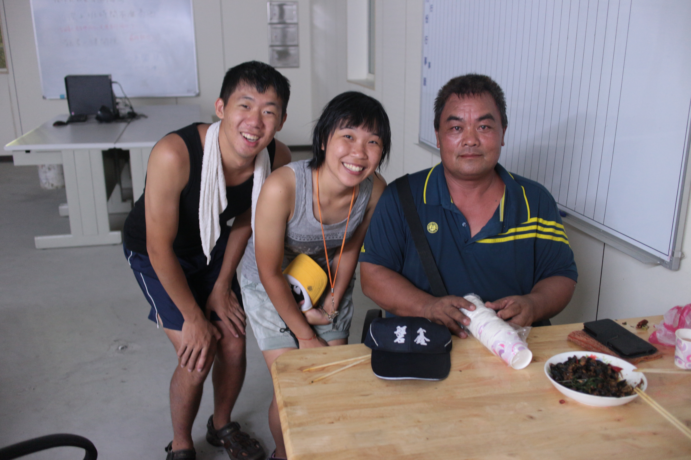
# IX
路線: 達仁—壽卡—199縣道—滿州—墾丁
住宿: 墾丁國小搭帳篷
最難忘: 壽卡不過小山一座、美麗的199縣道、滿州的小茜姊姊、追台灣最南端的夕陽
–
戰爭開始！我今天抱著戰鬥大魔王般緊張而謹慎的心情來面對壽卡，從出發前就一直聽說環島的人最累的路段就是過壽卡，對於騎車經驗不多的我來說，可是一個超級大挑戰呢！抱著雄心壯志，我們，上山！！
說來有趣！也許就是因為戰戰兢兢的面對這一段路，會累、會喘，但是漸漸習慣這樣爬上坡的節奏，到了壽卡頂之後竟有種「咦？結束了！？」的感覺！（有點囂張 XD），不過真的很開心呢！這是不是有代表我有一點進步了呢？抑或是因為戰戰兢兢的準備，所以可以如願地完成困難的挑戰！
過壽卡之後，就是享樂的時刻啦！應好友謝璐聲的推薦，過壽卡後由 199 縣道滑到墾丁非常值得一走，是條兩岸山林相伴的小路，到最後還會有美麗的海岸線相隨。騎過的感想是—真的是無敵美！！！天啊！這真的是我環島以來騎過最美最舒服的一段路了！因為是比較小的路，所以不用擔心下滑的途中會遇到汽車，騎起來很舒服又很安心！超級棒！有機會很想再去挑戰壽卡享受 199 縣道。
傍晚時，臨時起意想要看看台灣最南端的夕陽，這樣多浪漫啊！心想時間還早，應該可以不急不徐的到達墾丁…沒想到…眼見太陽漸漸往地平線一定，我們距離最南端的距離還有數公里之遠，不行啊…最南端的夕陽可是一生一次的耶！！就算耗盡全力筋疲力竭我也要騎到！！！就這樣一路賣力狂飆—超級無敵累！！！騎到腳都快斷掉了！
北宜不累；玉長不累；壽卡不累……墾丁最累！！！
所幸，最後的結果還是值得的，台灣最南端的夕陽，好美！因為這樣的努力騎到的，所以好美，也因為有很棒的夥伴在身邊！旅途中最重要的，不是去了哪裡看到甚麼美景，而是和誰在一起欣賞。
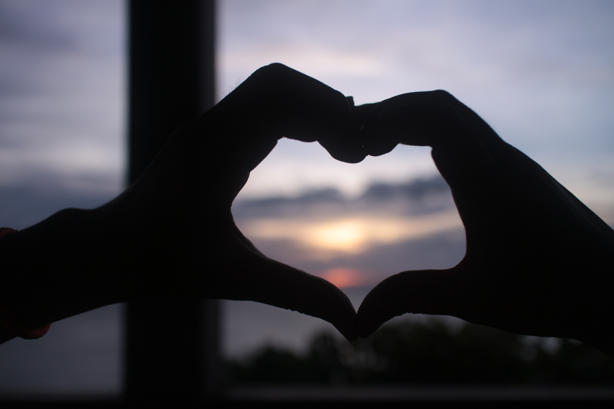
# X
路線: 墾丁—楓港—枋山—佳冬
住宿: 石光村外婆家
最難忘: 三場時機剛好的大雨、最後一天的東部之旅
–
今天是東部之行的最後一天，對我這次的環島之旅有非常大的意義，過了這天之後，就是我一個人的旅程了！因為我的好 partner 在接下來的行程中有其他事情，所以只能陪我騎完東部（真的好感謝他，東部若是沒有他陪我騎，我絕對完成不了！），接下來北上，就是自己一個人的旅程了。
今天一早出門，不到兩個小時就騎到了楓港，這裡，是台九線的終點。
台九線一直以來都是環島人在東部必經的首要路段，我們也是這樣從台九線出發的！這些天來，學會看路邊的里程數指示，從第一天顯示個位數，到現在，竟然已經到了476.7…天啊！不知不覺的我已經騎過半個台灣了！太不可思議！！ 476公里，一路的美景、一路的際遇、我們認識的人、我們相處的趣事，滿滿的甜美回憶在我腦海中奔馳，天啊！這幾天真的是太棒了！難以置信的美好… 很捨不得，捨不得沒有好夥伴一起騎車分享路上趣聞的歡樂。
以前的我，總是習慣一個人旅行，因為喜歡那種安靜聆聽心中聲音的感覺，但現在我發現，兩個人的相處有另一種分享的美好！跟個性相合的人在一起旅行真的是一件很棒的事！路上打打鬧鬧、互相加油打氣、照顧彼此，回想這幾天，真的讓我經歷到以前從未想像過的旅行的意義。一個人的旅行很棒很自在；兩個人的旅行，有另一番奇妙美好的滋味！
今天很幸運地避掉了三場大雨，真的是幸運到想要偷笑，下大雨的時間剛好就是我們吃東西休息的時間，若是在騎車時遇到，大概立馬變落湯人吧！XD
順利地回到屏東老家，舒服的屏東老家~啊！！東部之行結束了，接下來就是一個人的西部之旅，想知道我還遇到了甚麼樣的趣事嗎？敬請期待下回分曉囉！！！環島熱血不滅！！！
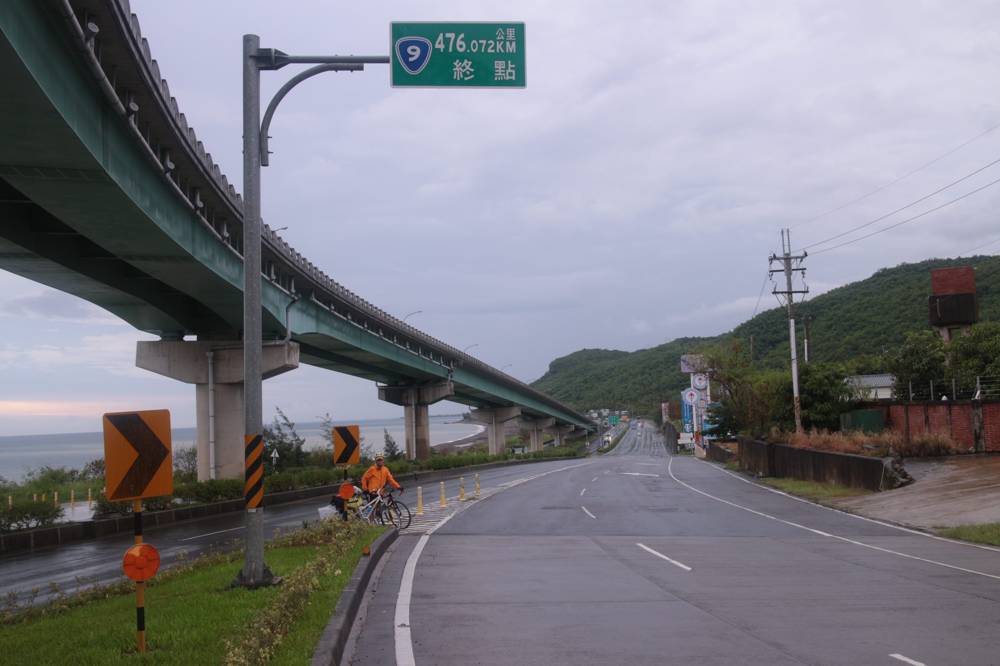
# 後記
記錄一下騎到快哭的自己與溫暖的朝陽。
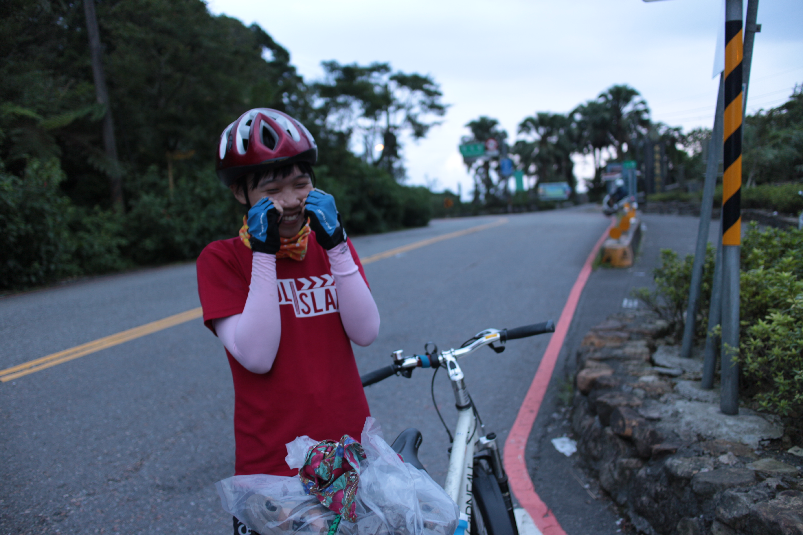
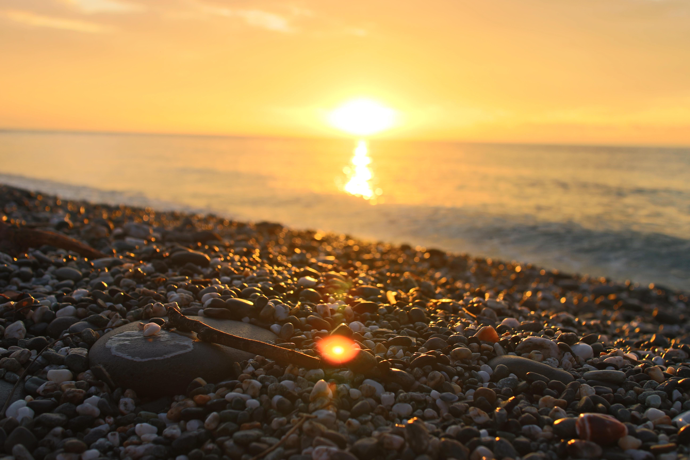